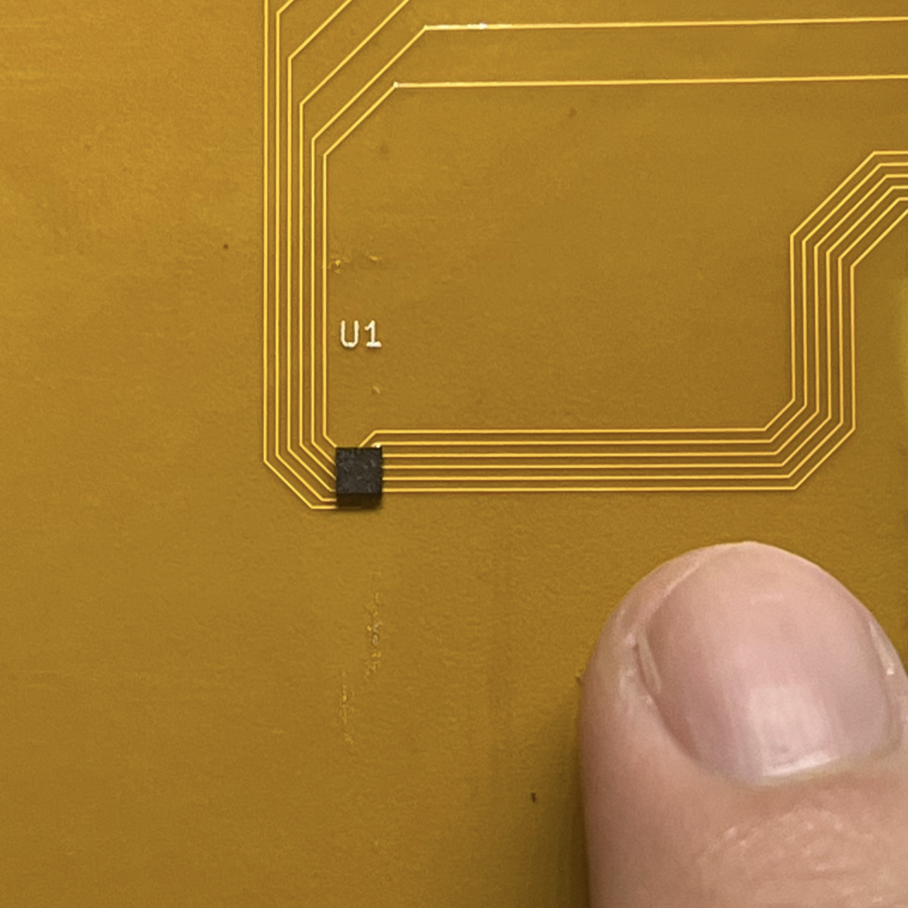
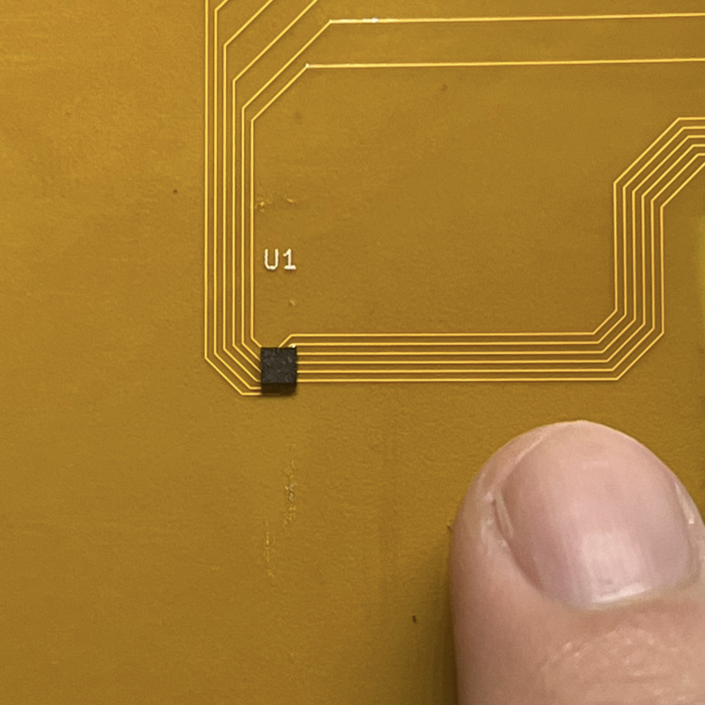

FINSIGHT V2
IN-FLIGHT FIN FLUTTER DATA ACQUISITION SYSTEM
What is FINSIGHT?
FINSIGHT V2 is a continuation of Duke AERO's FINSIGHT project, with the goal of characterizing fin loading & flutter during flight, using sensors embedded within the fin structure.
While the original FINSIGHT employed traditional strain gauges for a low profile design, FINSIGHT V2 uses a novel approach with MEMS accelerometers to achieve a larger measurement range and distinguish higher frequency flutter modes.
I served as the project lead for FINSIGHT V2 during my freshman year, overseeing the design, testing, and integration of the system.

Accelerometers
The accelerometer chosen is the LIS2DTW12TR, a 2x2x0.7 mm ±16g MEMS accelerometer, selected for its compact size, thin profile, and low power consumption. Its thin profile allows it to be embedded within the fin structure. The LIS2DTW12TR also offers high sensitivity and a wide measurement range, enables capturing both low-frequency structural vibrations and high-frequency flutter.
Each fin contains 8 accelerometers, strategically positioned at locations of antinodes and nodes of the flutter modes. This ensures the system can capture the complex flutter patterns during flight. The use of multiple sensors per fin enables redundancy and provides richer data for post-flight analysis.
Dual-layer PCB design
The accelerometers surface-mounted onto a 0.016" thin flexible PCB layer to capture the fin's natural vibration modes. However, our fin composite layup process requires a flat surface for the carbon fiber layers, and the accelerometers' thickness must not intefere with this. To accomodate this, I came up with a dual-layer design, with an overlay cover of G10 with the same thickness as the accelerometer. The accelerometers will sit flush within cutouts in the G10, and the two layers will be bonded together with Epoxy.
The image to the right shows the layers of the fin, designed by Linn Tjornhom. The accelerometers are placed on one side of the fin, off-midline to better capture the vibrations.
The Reef

Vibration data from all three fins are collected by a centralized data acquisition system known as the Reef. It serves as the core hub for sensing and logging in-flight structural dynamics.
The Reef is controlled by a Teensy 4.1 and uses three multiplexers to read data from 24 accelerometers embedded across the 3 fins. 20-pin IDC cables connect each fin to the Reef, allowing for easy setup during testing and integration.
Data is stored on a 1GB flash chip connected to the Teensy and powered by a compact 3.7V Li-Ion battery and a screw switch, making the system fully self-contained and flight-ready.
System Integration
The choice of a minimum-diameter rocket means the Reef cannot be mounted near the fins, so it has to be mounted in the bottom housing of the airbrakes, just above the motor.
This means that cables need to run from the fins, along the outside of the motor body tube, then through the body tube to inside the airbrakes.
This presents a challenge in terms of aerodynamic concerns and system integration, and required me to collaborate with multiple responsible subteams, from Propulsion, Structures, Aero Sims to Avionics.
Data Visualization
To process and visualizse the accelerometer's local acceleration into overall fin strain and flutter modes, I wrote a MATLAB script to animate the fin’s motion from flight data. The script loads CSV files from each test, integrates the accelerometer signals twice to estimate displacement, and reconstructs the fin’s shape over time using each sensor’s position.
It draws a 3D plot of the grid of 8 sensors per fin and updating their positions for each frame. This lets us see the fin’s vibration and flutter modes as they happened in flight, helping us spot critical events and improve our designs.
 
